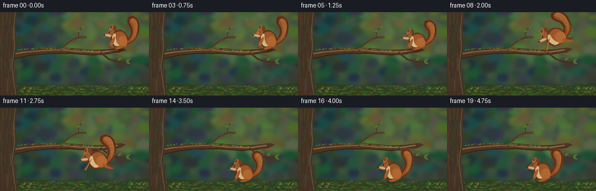

CODING AGENTS AS PIXEL WORLD MODELS
traex/GPT-6.1-Sol · dynamic_spatial_relationship_0022
点击播放 · 原生 RGB 像素
逐轮保存的候选
回放视频、检查图与代码变化。
每份候选均可单独播放。实际图片检查记录在下方工具轨迹中。
候选 01播放与检查图
点击播放 · 原生 RGB 像素

展开代码变化
--- 上一保存版本
+++ 本次保存版本
@@ -0,0 +1,205 @@
+from pathlib import Path
+import math
+import numpy as np
+from PIL import Image, ImageDraw, ImageFilter
+import artifact_io
+
+W,H,S=256,144,4
+rng=np.random.default_rng(22)
+
+def rgb(c): return tuple(int(max(0,min(255,x))) for x in c)
+def curve(points, n=32):
+ # connected cubic Bezier segments
+ out=[points[0]]
+ for j in range(1,len(points),3):
+ if j+2>=len(points): break
+ a=np.array(out[-1]); b=np.array(points[j]); c=np.array(points[j+1]); e=np.array(points[j+2])
+ for t in np.linspace(0,1,n)[1:]:
+ p=(1-t)**3*a+3*(1-t)**2*t*b+3*(1-t)*t*t*c+t**3*e
+ out.append(tuple(p))
+ return out
+
+def scene():
+ yy,xx=np.mgrid[0:H*S,0:W*S]/S
+ sun=np.exp(-((xx-184)**2/7600+(yy-29)**2/4200))
+ noise=rng.normal(0,0.55,xx.shape)
+ arr=np.stack([36+55*sun+yy*.11+noise,57+58*sun+yy*.07+noise,46+24*sun+yy*.035+noise],axis=-1)
+ im=Image.fromarray(np.uint8(np.clip(arr,0,255)))
+ d=ImageDraw.Draw(im)
+ def ellipse(b,c): d.ellipse(tuple(int(z*S) for z in b),fill=c)
+ def line(p,c,w): d.line([(int(x*S),int(y*S)) for x,y in p],fill=c,width=max(1,int(w*S)))
+ # Distant slender trunks, entirely out of focus.
+ for k in range(29):
+ x=float(rng.uniform(-20,275)); width=float(rng.uniform(1.5,7))
+ c=rgb((69+rng.uniform(-13,11),84+rng.uniform(-13,15),61+rng.uniform(-10,14)))
+ line([(x+12,-5),(x,86),(x-3,149)],c,width)
+ line([(x+2,58),(x-15,31),(x-22,15)],c,width*.4)
+ for k in range(270):
+ x,y=rng.uniform(0,256),rng.uniform(-15,142); r=rng.uniform(2,15)
+ light=(x>115 and y<80)
+ c=rgb((rng.uniform(65,110) if light else rng.uniform(26,66),rng.uniform(83,125) if light else rng.uniform(46,90),rng.uniform(43,77)))
+ ellipse((x-r,y-r*.65,x+r,y+r*.65),c)
+ im=im.filter(ImageFilter.GaussianBlur(3.0*S))
+ d=ImageDraw.Draw(im)
+ # ground: softly rolling moss below the branch
+ d.polygon([(0,128*S),(38*S,122*S),(86*S,126*S),(127*S,125*S),(181*S,130*S),(256*S,122*S),(256*S,144*S),(0,144*S)],fill=(47,65,34))
+ for k in range(750):
+ x=rng.uniform(0,256); y=rng.uniform(127,149); r=rng.uniform(.35,3.4)
+ c=rgb((rng.uniform(39,92),rng.uniform(61,107),rng.uniform(25,51)))
+ ellipse((x-r,y-r*.35,x+r,y+r*.3),c)
+ # The prominent branch, emerging from the left tree, with a tapered fork.
+ branch=[(-3,73),(19,69),(42,66),(68,62),(99,61),(126,62),(157,65),(183,64),(208,61),(216,64),(205,70),(181,73),(155,74),(126,71),(99,70),(70,72),(39,78),(0,88)]
+ d.polygon([(x*S,y*S) for x,y in branch],fill=(79,54,35))
+ line([(-2,76),(42,69),(77,66),(103,65),(137,68),(174,69),(202,65)],(145,109, sixty:=64),2.3)
+ line([(6,85),(52,74),(85,71),(120,71),(160,74),(189,71)],(48,34,26),1.6)
+ line([(104,65),(116,54),(133,44),(149,43)],(82,59,37),4)
+ line([(109,62),(127,48),(149,43)],(154,117,69),.7)
+ line([(135,44),(135,35),(140,27)],(77,57,34),1.5)
+ line([(172,69),(187,81),(202,85),(219,86)],(71,49,32),3)
+ line([(176,69),(191,81),(214,85)],(126,89,51),.7)
+ # Fine bark streaks, deliberately aligned with the branch grain.
+ for k in range(210):
+ x=rng.uniform(5,201)
+ mid=70-3*math.sin(x/41)
+ y=mid+rng.uniform(-2.5,2)
+ length=rng.uniform(1.2,7)
+ if 90<x<140: y-=1
+ line([(x,y),(x+length,y+rng.uniform(-.5,.5))],rgb((rng.uniform(60,116),rng.uniform(43,81),rng.uniform(29,48))),rng.uniform(.15,.45))
+ # Trunk is in the foreground and gives the branch a clear root.
+ d.polygon([(0,0),(29*S,0),(26*S,34*S),(28*S,61*S),(23*S,94*S),(31*S,144*S),(0,144*S)],fill=(70,55,39))
+ for k in range(110):
+ x=rng.uniform(0,26); y=rng.uniform(-12,140)
+ line([(x,y),(x+rng.uniform(-2,2),y+9),(x+rng.uniform(-2,2),y+22)],rgb((rng.uniform(49,109),rng.uniform(41,86),rng.uniform(30,61))),rng.uniform(.25,1.1))
+ line([(26,1),(23,31),(25,59),(20,94),(27,143)],(122,100,66),1.1)
+ # Moss along branch upper lip.
+ for k in range(125):
+ x=rng.uniform(28,173); y=65-3*math.sin((x-22)/36)+rng.uniform(-1.0,1)
+ ellipse((x,y,x+rng.uniform(.5,2.8),y+rng.uniform(.4,1.2)),rgb((rng.uniform(86,131),rng.uniform(96,135),rng.uniform(43,66))))
+ # Leaves on two smaller offshoots, with sunlit edges and veins.
+ def leaf(x,y,l,ang,col):
+ a=math.radians(ang); u=np.array([math.cos(a),math.sin(a)]); v=np.array([-u[1],u[0]])
+ p=np.array([x,y]); pts=[p,p+u*l*.4+v*l*.22,p+u*l,p+u*l*.4-v*l*.22]
+ d.polygon([(int(q[0]*S),int(q[1]*S)) for q in pts],fill=col)
+ line([tuple(p),tuple(p+u*l*.9)],rgb(np.array(col)*1.18),.27)
+ for x,y,a in [(140,29,-48),(139,32,175),(148,43,-15),(202,84,-42),(216,85,30),(216,85,-30)]:
+ leaf(x,y,10,a,(82,113,45))
+ # A few small sharp foreground sprigs frame the lower corners.
+ for x in [42,53,226,240,247]:
+ h=rng.uniform(8,16); line([(x,144),(x-3,144-h)],(74,95,39),.6)
+ leaf(x-1,139,7,-150,(87,110,44));leaf(x-2,134,7,-48,(103,121,50))
+ return im
+
+BASE=scene()
+# Draw each squirrel into transparent high-resolution layer, with anatomically
+# distinct hind haunch, chest, fingers, almond eye, pointed ears, and furry plume.
+def squirrel(cx,cy,angle=0,flight=0,crouch=0,tail_sway=0,blink=False):
+ im=Image.new('RGBA',(W*S,H*S),(0,0,0,0));d=ImageDraw.Draw(im)
+ a=math.radians(angle)
+ def trans(p):
+ x,y=p
+ x*=1+flight*.14; y*=1-crouch*.16
+ return ((cx+x*math.cos(a)-y*math.sin(a))*S,(cy+x*math.sin(a)+y*math.cos(a))*S)
+ def poly(p,c):d.polygon([trans(q) for q in p],fill=c)
+ def path(p,c):poly(curve(p),c)
+ def line(p,c,w=.5):d.line([trans(q) for q in p],fill=c,width=max(1,round(w*S)))
+ def ell(x,y,rx,ry,c,n=64):poly([(x+rx*math.cos(t),y+ry*math.sin(t)) for t in np.linspace(0,2*math.pi,n)],c)
+ # Plumed S-shaped tail, dark outline and overlapping fur lit along the crown.
+ tail=[(8,9),(22,9),(33,-4),(34,-17),(37,-30),(31,-41),(22,-42),(12,-42),(11,-32),(16,-25),(21,-17),(22,-8),(8,5)]
+ def ts(p):
+ x,y=p; f=max(0,min(1,(8-y)/45)); return (x+tail_sway*f,y)
+ tail=[ts(q) for q in tail]
+ path(tail,(91,46,25))
+ inner=[(10,7),(24,5),(32,-7),(31,-20),(33,-31),(28,-38),(22,-38),(17,-37),(16,-31),(20,-25),(26,-16),(24,-7),(10,7)]
+ path([ts(q) for q in inner],(154,79,34))
+ path([ts(q) for q in [(20,-33),(21,-39),(28,-38),(31,-29),(34,-18),(27,-4),(20,1),(27,-10),(28,-22),(20,-33)]],(179,104,49))
+ # Thousands are unnecessary at this resolution; short tangent fibers convey fur.
+ rr=np.random.default_rng(97)
+ outline=curve(tail)
+ for k in range(200):
+ j=int(rr.integers(1,len(outline)-1)); x,y=outline[j]; dx,dy=np.array(outline[j+1])-np.array(outline[j-1]);ln=max(.01,math.hypot(dx,dy)); nx,ny=dy/ln,-dx/ln
+ l=rr.uniform(.45,1.8)
+ line([(x-nx*.5,y-ny*.5),(x+nx*l,y+ny*l)],(130+int(rr.uniform(0,53)),75+int(rr.uniform(0,36)),37+int(rr.uniform(0,20)),235),.22)
+ for k in range(135):
+ y=rr.uniform(-35,-5); x=27+tail_sway*max(0,min(1,(8-y)/45))+rr.uniform(-3,3)
+ line([(x,y),(x-rr.uniform(.6,2),y+rr.uniform(1.3,3))],(185,111,55,140),.22)
+ # Rear foot and far-side arm.
+ if flight>.1:
+ path([(6,5),(12,6),(16,12),(21,13),(23,14),(22,16),(17,15),(9,13),(4,9),(6,5)],(109,56,28))
+ path([(-9,-3),(-17,1),(-24,9),(-27,11),(-28,13),(-23,12),(-18,7),(-11,5),(-9,-3)],(109,57,28))
+ else:
+ path([(5,7),(8,9),(10,13),(6,15),(-1,15),(-9,15),(-10,13),(-6,11),(5,7)],(111, sixty:=60,31))
+ # Body outer contour.
+ path([(10,10),(19,3),(15,-11),(7,-15),(2,-20),(-7,-18),(-11,-12),(-17,-6),(-17,5),(-9,11),(-3,15),(6,14),(10,10)],(102,53,28))
+ path([(9,10),(16,3),(13,-10),(5,-14),(0,-16),(-8,-14),(-10,-7),(-12,0),(-9,8),(-2,12),(5,13),(9,10)],(159,85,39))
+ # Copper back and round hind thigh.
+ ell(5,3,9.1,9.8,(173,96,43))
+ ell(6,2,7.6,8.7,(181,105,51))
+ path([(-10,-12),(-13,-5),(-14,1),(-9,8),(-6,12),(-2,11),(0,9),(-5,6),(-7,-3),(-6,-10),(-10,-12)],(213,186,133))
+ # Neck, rear ear then head, clear small rodent muzzle.
+ path([(-10,-16),(-12,-24),(-9,-28),(-5,-22),(-4,-16),(-7,-14),(-10,-16)],(117,62,32))
+ path([(-15,-15),(-20,-15),(-24,-11),(-27,-9),(-27,-7),(-21,-5),(-16,-4),(-9,-8),(-7,-14),(-10,-19),(-15,-19),(-15,-15)],(157,84,40))
+ path([(-18,-16),(-17,-24),(-14,-28),(-10,-25),(-11,-19),(-12,-16),(-18,-16)],(179,98,46))
+ path([(-16,-20),(-16,-24),(-14,-26),(-12,-24),(-13,-20),(-14,-19),(-16,-20)],(111,61,40))
+ line([(-15,-27),(-15,-29)],(96,56,36),.5)
+ path([(-24,-10),(-25,-7),(-20,-5),(-15,-6),(-12,-7),(-16,-10),(-20,-10),(-23,-9),(-24,-10),(-24,-10)],(210,176,124))
+ ell(-25.9,-8.4,1.15,.78,(40,30,26))
+ line([(-25,-6.5),(-21,-6.5),(-19,-7)],(80, fifty:=50,31),.35)
+ # bright reflective eye and ocher eye rim
+ ell(-17.7,-13,2.1,1.9,(193,126,66))
+ if blink:
+ line([(-19.3,-13),(-16.2,-13.2)],(35,27,21),.6)
+ else:
+ ell(-17.8,-13,1.55,1.65,(22,23,19));ell(-18.3,-13.6,.48,.48,(247,237,208));ell(-17.2,-12.5,.19,.2,(138,127,93))
+ # Near arm and individual toes.
+ if flight>.1:
+ arm=[(-8,-6),(-12,-1),(-17,6),(-21,11),(-23,12),(-24,10),(-21,7),(-16,2),(-11,-5),(-8,-6)]
+ path(arm,(174,96,46));line([(-22,10),(-25,12)],(72,43,28),.6)
+ for z in range(3):line([(-22,10+z*.65),(-24-z*.3,12+z*.5)],(68,42,29),.35)
+ path([(7,7),(12,10),(16,16),(20,18),(22,19),(20,20),(14,18),(8,14),(3,10),(7,7)],(165,87,39))
+ else:
+ path([(-8,-6),(-12,-4),(-13,0),(-16,6),(-16,11),(-13,12),(-11,8),(-9,3),(-6,-3),(-8,-6)],(168,93,46))
+ path([(-16,10),(-18,12),(-20,13),(-19,14),(-13,14),(-11,12),(-16,10)],(128,71,37))
+ path([(7,9),(8,12),(4,15),(-2,16),(-8,16),(-10,14),(-5,13),(1,10),(7,9)],(166,90,40))
+ for z in range(3):line([(-8+z*1.3,14.4),(-10+z*1.3,16)],(68,42,29),.34)
+ for z in range(3):line([(-18+z*1.3,12.8),(-20+z*1.3,14)],(68,42,29),.32)
+ # Fur streaks follow anatomy; fixed random seed means no texture flicker.
+ for k in range(145):
+ x,y=rr.uniform(-6,12),rr.uniform(-12,10)
+ if ((x-3)/11)**2+((y+1)/13)**2<.85:
+ col=(201,126,65,170) if x>0 else (184,113,59,130)
+ line([(x,y),(x+.25,y+rr.uniform(.45,1.4))],col,.19)
+ for k in range(35):
+ x,y=rr.uniform(-20,-10),rr.uniform(-16,-8)
+ line([(x,y),(x-.7,y+.2)],(215,144, seventy:=70,125),.17)
+ # Thin, sparse whiskers retain the animal's expression at video resolution.
+ for p in [[(-23,-7),(-29,-8)],[(-23,-6.8),(-29,-5.5)],[(-22,-6.5),(-27,-4.2)]]:
+ line(p,(205,184,141,150),.17)
+ return im
+
+def main():
+ frames=[]
+ # A readable hold, anticipation, a ballistic downward-left leap, then landing.
+ poses=[(205,48,0,0,0),(205,48,0,0,0),(205,48,0,0,0),(204.5,48.4,0,0,0),(204,49,0,0,.2),(205,51,-3,0,.75),
+ (203,44,-13,.65,0),(196,39,-22,1,0),(188,44,-30,1,0),(181,55,-30,1,0),(174, seventy:=72,-24,1,0),(168,92,-14,.8,0),
+ (164,114,0,.2,.9),(164,116,0,0,1),(164,113.5,0,0,.4),(164,112,0,0,0),(164,112,0,0,0),(164,112,0,0,0),(164,112,0,0,0),(164,112,0,0,0)]
+ for i,(x,y,a,f,c) in enumerate(poses):
+ bg=BASE.copy().convert('RGBA')
+ shadow=Image.new('RGBA',bg.size,(0,0,0,0));sd=ImageDraw.Draw(shadow)
+ if i<6:
+ sd.ellipse((187*S,63*S,218*S,68*S),fill=(24,22,13,92))
+ else:
+ alpha=int(22+60*min(1,max(0,(y-60)/52)))
+ r=12+8*(1-min(1,max(0,(y-40)/74)))
+ sd.ellipse(((x-r)*S,126*S,(x+r)*S,130*S),fill=(22,28,13,alpha))
+ bg=Image.alpha_composite(bg,shadow.filter(ImageFilter.GaussianBlur(.85*S)))
+ sway=math.sin(i*.75)*1.1 if f==0 else -6*math.sin((i-5)/7*math.pi)
+ animal=squirrel(x,y,a,f,c,sway,blink=i in (3,17))
+ bg=Image.alpha_composite(bg,animal)
+ # Subtle lens vignette and restrained film-like grading.
+ out=np.asarray(bg.convert('RGB').resize((W,H),Image.Resampling.LANCZOS)).astype(float)
+ yy,xx=np.mgrid[0:H,0:W];v=1-.10*((xx-137)**2/(165**2)+(yy-70)**2/(120**2))
+ out=np.clip(out*v[:,:,None],0,255).astype(np.uint8)
+ frames.append(out)
+ artifact_io.save(np.stack(frames),Path(__file__).parent)
+
+if __name__=='__main__':main()
候选 02播放与检查图
点击播放 · 原生 RGB 像素

展开代码变化
--- 上一保存版本
+++ 本次保存版本
@@ -50,7 +50,7 @@
# The prominent branch, emerging from the left tree, with a tapered fork.
branch=[(-3,73),(19,69),(42,66),(68,62),(99,61),(126,62),(157,65),(183,64),(208,61),(216,64),(205,70),(181,73),(155,74),(126,71),(99,70),(70,72),(39,78),(0,88)]
d.polygon([(x*S,y*S) for x,y in branch],fill=(79,54,35))
- line([(-2,76),(42,69),(77,66),(103,65),(137,68),(174,69),(202,65)],(145,109, sixty:=64),2.3)
+ line([(-2,76),(42,69),(77,66),(103,65),(137,68),(174,69),(202,65)],(145,109, 64),2.3)
line([(6,85),(52,74),(85,71),(120,71),(160,74),(189,71)],(48,34,26),1.6)
line([(104,65),(116,54),(133,44),(149,43)],(82,59,37),4)
line([(109,62),(127,48),(149,43)],(154,117,69),.7)
@@ -127,7 +127,7 @@
path([(6,5),(12,6),(16,12),(21,13),(23,14),(22,16),(17,15),(9,13),(4,9),(6,5)],(109,56,28))
path([(-9,-3),(-17,1),(-24,9),(-27,11),(-28,13),(-23,12),(-18,7),(-11,5),(-9,-3)],(109,57,28))
else:
- path([(5,7),(8,9),(10,13),(6,15),(-1,15),(-9,15),(-10,13),(-6,11),(5,7)],(111, sixty:=60,31))
+ path([(5,7),(8,9),(10,13),(6,15),(-1,15),(-9,15),(-10,13),(-6,11),(5,7)],(111, 60,31))
# Body outer contour.
path([(10,10),(19,3),(15,-11),(7,-15),(2,-20),(-7,-18),(-11,-12),(-17,-6),(-17,5),(-9,11),(-3,15),(6,14),(10,10)],(102,53,28))
path([(9,10),(16,3),(13,-10),(5,-14),(0,-16),(-8,-14),(-10,-7),(-12,0),(-9,8),(-2,12),(5,13),(9,10)],(159,85,39))
@@ -143,7 +143,7 @@
line([(-15,-27),(-15,-29)],(96,56,36),.5)
path([(-24,-10),(-25,-7),(-20,-5),(-15,-6),(-12,-7),(-16,-10),(-20,-10),(-23,-9),(-24,-10),(-24,-10)],(210,176,124))
ell(-25.9,-8.4,1.15,.78,(40,30,26))
- line([(-25,-6.5),(-21,-6.5),(-19,-7)],(80, fifty:=50,31),.35)
+ line([(-25,-6.5),(-21,-6.5),(-19,-7)],(80, 50,31),.35)
# bright reflective eye and ocher eye rim
ell(-17.7,-13,2.1,1.9,(193,126,66))
if blink:
@@ -170,7 +170,7 @@
line([(x,y),(x+.25,y+rr.uniform(.45,1.4))],col,.19)
for k in range(35):
x,y=rr.uniform(-20,-10),rr.uniform(-16,-8)
- line([(x,y),(x-.7,y+.2)],(215,144, seventy:=70,125),.17)
+ line([(x,y),(x-.7,y+.2)],(215,144, 70,125),.17)
# Thin, sparse whiskers retain the animal's expression at video resolution.
for p in [[(-23,-7),(-29,-8)],[(-23,-6.8),(-29,-5.5)],[(-22,-6.5),(-27,-4.2)]]:
line(p,(205,184,141,150),.17)
@@ -180,7 +180,7 @@
frames=[]
# A readable hold, anticipation, a ballistic downward-left leap, then landing.
poses=[(205,48,0,0,0),(205,48,0,0,0),(205,48,0,0,0),(204.5,48.4,0,0,0),(204,49,0,0,.2),(205,51,-3,0,.75),
- (203,44,-13,.65,0),(196,39,-22,1,0),(188,44,-30,1,0),(181,55,-30,1,0),(174, seventy:=72,-24,1,0),(168,92,-14,.8,0),
+ (203,50,-13,.65,0),(196,51,-22,1,0),(188,57,-30,1,0),(181,66,-30,1,0),(174,79,-24,1,0),(168,97,-14,.8,0),
(164,114,0,.2,.9),(164,116,0,0,1),(164,113.5,0,0,.4),(164,112,0,0,0),(164,112,0,0,0),(164,112,0,0,0),(164,112,0,0,0),(164,112,0,0,0)]
for i,(x,y,a,f,c) in enumerate(poses):
bg=BASE.copy().convert('RGBA')
候选 03播放与检查图
可观测工具轨迹
实际执行的命令与返回图片。
命令 1exit 0
/bin/bash -lc 'ls -la && cat prompt.txt && cat GENERATION_RULES.md && cat task_spec.json'
命令 2exit 0
/bin/bash -lc "cat artifact_io.py && python - <<'PY' import PIL,numpy print(PIL.__version__) PY"
命令 3exit 0
/bin/bash -lc "cat > generate.py <<'PY'
from pathlib import Path
import math
import numpy as np
from PIL import Image, ImageDraw, ImageFilter
import artifact_io
W,H,S=256,144,4
rng=np.random.default_rng(22)
def rgb(c): return tuple(int(max(0,min(255,x))) for x in c)
def curve(points, n=32):
# connected cubic Bezier segments
out=[points[0]]
for j in range(1,len(points),3):
if j+2>=len(points): break
a=np.array(out[-1]); b=np.array(points[j]); c=np.array(points[j+1]); e=np.array(points[j+2])
for t in np.linspace(0,1,n)[1:]:
p=(1-t)**3*a+3*(1-t)**2*t*b+3*(1-t)*t*t*c+t**3*e
out.append(tuple(p))
return out
def scene():
yy,xx=np.mgrid[0:H*S,0:W*S]/S
sun=np.exp(-((xx-184)**2/7600+(yy-29)**2/4200))
noise=rng.normal(0,0.55,xx.shape)
arr=np.stack([36+55*sun+yy*.11+noise,57+58*sun+yy*.07+noise,46+24*sun+yy*.035+noise],axis=-1)
im=Image.fromarray(np.uint8(np.clip(arr,0,255)))
d=ImageDraw.Draw(im)
def ellipse(b,c): d.ellipse(tuple(int(z*S) for z in b),fill=c)
def line(p,c,w): d.line([(int(x*S),int(y*S)) for x,y in p],fill=c,width=max(1,int(w*S)))
# Distant slender trunks, entirely out of focus.
for k in range(29):
x=float(rng.uniform(-20,275)); width=float(rng.uniform(1.5,7))
c=rgb((69+rng.uniform(-13,11),84+rng.uniform(-13,15),61+rng.uniform(-10,14)))
line([(x+12,-5),(x,86),(x-3,149)],c,width)
line([(x+2,58),(x-15,31),(x-22,15)],c,width*.4)
for k in range(270):
x,y=rng.uniform(0,256),rng.uniform(-15,142); r=rng.uniform(2,15)
light=(x>115 and y<80)
c=rgb((rng.uniform(65,110) if light else rng.uniform(26,66),rng.uniform(83,125) if light else rng.uniform(46,90),rng.uniform(43,77)))
ellipse((x-r,y-r*.65,x+r,y+r*.65),c)
im=im.filter(ImageFilter.GaussianBlur(3.0*S))
d=ImageDraw.Draw(im)
# ground: softly rolling moss below the branch
d.polygon([(0,128*S),(38*S,122*S),(86*S,126*S),(127*S,125*S),(181*S,130*S),(256*S,122*S),(256*S,144*S),(0,144*S)],fill=(47,65,34))
for k in range(750):
x=rng.uniform(0,256); y=rng.uniform(127,149); r=rng.uniform(.35,3.4)
c=rgb((rng.uniform(39,92),rng.uniform(61,107),rng.uniform(25,51)))
ellipse((x-r,y-r*.35,x+r,y+r*.3),c)
# The prominent branch, emerging from the left tree, with a tapered fork.
branch=[(-3,73),(19,69),(42,66),(68,62),(99,61),(126,62),(157,65),(183,64),(208,61),(216,64),(205,70),(181,73),(155,74),(126,71),(99,70),(70,72),(39,78),(0,88)]
d.polygon([(x*S,y*S) for x,y in branch],fill=(79,54,35))
line([(-2,76),(42,69),(77,66),(103,65),(137,68),(174,69),(202,65)],(145,109, sixty:=64),2.3)
line([(6,85),(52,74),(85,71),(120,71),(160,74),(189,71)],(48,34,26),1.6)
line([(104,65),(116,54),(133,44),(149,43)],(82,59,37),4)
line([(109,62),(127,48),(149,43)],(154,117,69),.7)
line([(135,44),(135,35),(140,27)],(77,57,34),1.5)
line([(172,69),(187,81),(202,85),(219,86)],(71,49,32),3)
line([(176,69),(191,81),(214,85)],(126,89,51),.7)
# Fine bark streaks, deliberately aligned with the branch grain.
for k in range(210):
x=rng.uniform(5,201)
mid=70-3*math.sin(x/41)
y=mid+rng.uniform(-2.5,2)
length=rng.uniform(1.2,7)
if 90<x<140: y-=1
line([(x,y),(x+length,y+rng.uniform(-.5,.5))],rgb((rng.uniform(60,116),rng.uniform(43,81),rng.uniform(29,48))),rng.uniform(.15,.45))
# Trunk is in the foreground and gives the branch a clear root.
d.polygon([(0,0),(29*S,0),(26*S,34*S),(28*S,61*S),(23*S,94*S),(31*S,144*S),(0,144*S)],fill=(70,55,39))
for k in range(110):
x=rng.uniform(0,26); y=rng.uniform(-12,140)
line([(x,y),(x+rng.uniform(-2,2),y+9),(x+rng.uniform(-2,2),y+22)],rgb((rng.uniform(49,109),rng.uniform(41,86),rng.uniform(30,61))),rng.uniform(.25,1.1))
line([(26,1),(23,31),(25,59),(20,94),(27,143)],(122,100,66),1.1)
# Moss along branch upper lip.
for k in range(125):
x=rng.uniform(28,173); y=65-3*math.sin((x-22)/36)+rng.uniform(-1.0,1)
ellipse((x,y,x+rng.uniform(.5,2.8),y+rng.uniform(.4,1.2)),rgb((rng.uniform(86,131),rng.uniform(96,135),rng.uniform(43,66))))
# Leaves on two smaller offshoots, with sunlit edges and veins.
def leaf(x,y,l,ang,col):
a=math.radians(ang); u=np.array([math.cos(a),math.sin(a)]); v=np.array([-u[1],u[0]])
p=np.array([x,y]); pts=[p,p+u*l*.4+v*l*.22,p+u*l,p+u*l*.4-v*l*.22]
d.polygon([(int(q[0]*S),int(q[1]*S)) for q in pts],fill=col)
line([tuple(p),tuple(p+u*l*.9)],rgb(np.array(col)*1.18),.27)
for x,y,a in [(140,29,-48),(139,32,175),(148,43,-15),(202,84,-42),(216,85,30),(216,85,-30)]:
leaf(x,y,10,a,(82,113,45))
# A few small sharp foreground sprigs frame the lower corners.
for x in [42,53,226,240,247]:
h=rng.uniform(8,16); line([(x,144),(x-3,144-h)],(74,95,39),.6)
leaf(x-1,139,7,-150,(87,110,44));leaf(x-2,134,7,-48,(103,121,50))
return im
BASE=scene()
# Draw each squirrel into transparent high-resolution layer, with anatomically
# distinct hind haunch, chest, fingers, almond eye, pointed ears, and furry plume.
def squirrel(cx,cy,angle=0,flight=0,crouch=0,tail_sway=0,blink=False):
im=Image.new('RGBA',(W*S,H*S),(0,0,0,0));d=ImageDraw.Draw(im)
a=math.radians(angle)
def trans(p):
x,y=p
x*=1+flight*.14; y*=1-crouch*.16
return ((cx+x*math.cos(a)-y*math.sin(a))*S,(cy+x*math.sin(a)+y*math.cos(a))*S)
def poly(p,c):d.polygon([trans(q) for q in p],fill=c)
def path(p,c):poly(curve(p),c)
def line(p,c,w=.5):d.line([trans(q) for q in p],fill=c,width=max(1,round(w*S)))
def ell(x,y,rx,ry,c,n=64):poly([(x+rx*math.cos(t),y+ry*math.sin(t)) for t in np.linspace(0,2*math.pi,n)],c)
# Plumed S-shaped tail, dark outline and overlapping fur lit along the crown.
tail=[(8,9),(22,9),(33,-4),(34,-17),(37,-30),(31,-41),(22,-42),(12,-42),(11,-32),(16,-25),(21,-17),(22,-8),(8,5)]
def ts(p):
x,y=p; f=max(0,min(1,(8-y)/45)); return (x+tail_sway*f,y)
tail=[ts(q) for q in tail]
path(tail,(91,46,25))
inner=[(10,7),(24,5),(32,-7),(31,-20),(33,-31),(28,-38),(22,-38),(17,-37),(16,-31),(20,-25),(26,-16),(24,-7),(10,7)]
path([ts(q) for q in inner],(154,79,34))
path([ts(q) for q in [(20,-33),(21,-39),(28,-38),(31,-29),(34,-18),(27,-4),(20,1),(27,-10),(28,-22),(20,-33)]],(179,104,49))
# Thousands are unnecessary at this resolution; short tangent fibers convey fur.
rr=np.random.default_rng(97)
outline=curve(tail)
for k in range(200):
j=int(rr.integers(1,len(outline)-1)); x,y=outline[j]; dx,dy=np.array(outline[j+1])-np.array(outline[j-1]);ln=max(.01,math.hypot(dx,dy)); nx,ny=dy/ln,-dx/ln
l=rr.uniform(.45,1.8)
line([(x-nx*.5,y-ny*.5),(x+nx*l,y+ny*l)],(130+int(rr.uniform(0,53)),75+int(rr.uniform(0,36)),37+int(rr.uniform(0,20)),235),.22)
for k in range(135):
y=rr.uniform(-35,-5); x=27+tail_sway*max(0,min(1,(8-y)/45))+rr.uniform(-3,3)
line([(x,y),(x-rr.uniform(.6,2),y+rr.uniform(1.3,3))],(185,111,55,140),.22)
# Rear foot and far-side arm.
if flight>.1:
path([(6,5),(12,6),(16,12),(21,13),(23,14),(22,16),(17,15),(9,13),(4,9),(6,5)],(109,56,28))
path([(-9,-3),(-17,1),(-24,9),(-27,11),(-28,13),(-23,12),(-18,7),(-11,5),(-9,-3)],(109,57,28))
else:
path([(5,7),(8,9),(10,13),(6,15),(-1,15),(-9,15),(-10,13),(-6,11),(5,7)],(111, sixty:=60,31))
# Body outer contour.
path([(10,10),(19,3),(15,-11),(7,-15),(2,-20),(-7,-18),(-11,-12),(-17,-6),(-17,5),(-9,11),(-3,15),(6,14),(10,10)],(102,53,28))
path([(9,10),(16,3),(13,-10),(5,-14),(0,-16),(-8,-14),(-10,-7),(-12,0),(-9,8),(-2,12),(5,13),(9,10)],(159,85,39))
# Copper back and round hind thigh.
ell(5,3,9.1,9.8,(173,96,43))
ell(6,2,7.6,8.7,(181,105,51))
path([(-10,-12),(-13,-5),(-14,1),(-9,8),(-6,12),(-2,11),(0,9),(-5,6),(-7,-3),(-6,-10),(-10,-12)],(213,186,133))
# Neck, rear ear then head, clear small rodent muzzle.
path([(-10,-16),(-12,-24),(-9,-28),(-5,-22),(-4,-16),(-7,-14),(-10,-16)],(117,62,32))
path([(-15,-15),(-20,-15),(-24,-11),(-27,-9),(-27,-7),(-21,-5),(-16,-4),(-9,-8),(-7,-14),(-10,-19),(-15,-19),(-15,-15)],(157,84,40))
path([(-18,-16),(-17,-24),(-14,-28),(-10,-25),(-11,-19),(-12,-16),(-18,-16)],(179,98,46))
path([(-16,-20),(-16,-24),(-14,-26),(-12,-24),(-13,-20),(-14,-19),(-16,-20)],(111,61,40))
line([(-15,-27),(-15,-29)],(96,56,36),.5)
path([(-24,-10),(-25,-7),(-20,-5),(-15,-6),(-12,-7),(-16,-10),(-20,-10),(-23,-9),(-24,-10),(-24,-10)],(210,176,124))
ell(-25.9,-8.4,1.15,.78,(40,30,26))
line([(-25,-6.5),(-21,-6.5),(-19,-7)],(80, fifty:=50,31),.35)
# bright reflective eye and ocher eye rim
ell(-17.7,-13,2.1,1.9,(193,126,66))
if blink:
line([(-19.3,-13),(-16.2,-13.2)],(35,27,21),.6)
else:
ell(-17.8,-13,1.55,1.65,(22,23,19));ell(-18.3,-13.6,.48,.48,(247,237,208));ell(-17.2,-12.5,.19,.2,(138,127,93))
# Near arm and individual toes.
if flight>.1:
arm=[(-8,-6),(-12,-1),(-17,6),(-21,11),(-23,12),(-24,10),(-21,7),(-16,2),(-11,-5),(-8,-6)]
path(arm,(174,96,46));line([(-22,10),(-25,12)],(72,43,28),.6)
for z in range(3):line([(-22,10+z*.65),(-24-z*.3,12+z*.5)],(68,42,29),.35)
path([(7,7),(12,10),(16,16),(20,18),(22,19),(20,20),(14,18),(8,14),(3,10),(7,7)],(165,87,39))
else:
path([(-8,-6),(-12,-4),(-13,0),(-16,6),(-16,11),(-13,12),(-11,8),(-9,3),(-6,-3),(-8,-6)],(168,93,46))
path([(-16,10),(-18,12),(-20,13),(-19,14),(-13,14),(-11,12),(-16,10)],(128,71,37))
path([(7,9),(8,12),(4,15),(-2,16),(-8,16),(-10,14),(-5,13),(1,10),(7,9)],(166,90,40))
for z in range(3):line([(-8+z*1.3,14.4),(-10+z*1.3,16)],(68,42,29),.34)
for z in range(3):line([(-18+z*1.3,12.8),(-20+z*1.3,14)],(68,42,29),.32)
# Fur streaks follow anatomy; fixed random seed means no texture flicker.
for k in range(145):
x,y=rr.uniform(-6,12),rr.uniform(-12,10)
if ((x-3)/11)**2+((y+1)/13)**2<.85:
col=(201,126,65,170) if x>0 else (184,113,59,130)
line([(x,y),(x+.25,y+rr.uniform(.45,1.4))],col,.19)
for k in range(35):
x,y=rr.uniform(-20,-10),rr.uniform(-16,-8)
line([(x,y),(x-.7,y+.2)],(215,144, seventy:=70,125),.17)
# Thin, sparse whiskers retain the animal's expression at video resolution.
for p in [[(-23,-7),(-29,-8)],[(-23,-6.8),(-29,-5.5)],[(-22,-6.5),(-27,-4.2)]]:
line(p,(205,184,141,150),.17)
return im
def main():
frames=[]
# A readable hold, anticipation, a ballistic downward-left leap, then landing.
poses=[(205,48,0,0,0),(205,48,0,0,0),(205,48,0,0,0),(204.5,48.4,0,0,0),(204,49,0,0,.2),(205,51,-3,0,.75),
(203,44,-13,.65,0),(196,39,-22,1,0),(188,44,-30,1,0),(181,55,-30,1,0),(174, seventy:=72,-24,1,0),(168,92,-14,.8,0),
(164,114,0,.2,.9),(164,116,0,0,1),(164,113.5,0,0,.4),(164,112,0,0,0),(164,112,0,0,0),(164,112,0,0,0),(164,112,0,0,0),(164,112,0,0,0)]
for i,(x,y,a,f,c) in enumerate(poses):
bg=BASE.copy().convert('RGBA')
shadow=Image.new('RGBA',bg.size,(0,0,0,0));sd=ImageDraw.Draw(shadow)
if i<6:
sd.ellipse((187*S,63*S,218*S,68*S),fill=(24,22,13,92))
else:
alpha=int(22+60*min(1,max(0,(y-60)/52)))
r=12+8*(1-min(1,max(0,(y-40)/74)))
sd.ellipse(((x-r)*S,126*S,(x+r)*S,130*S),fill=(22,28,13,alpha))
bg=Image.alpha_composite(bg,shadow.filter(ImageFilter.GaussianBlur(.85*S)))
sway=math.sin(i*.75)*1.1 if f==0 else -6*math.sin((i-5)/7*math.pi)
animal=squirrel(x,y,a,f,c,sway,blink=i in (3,17))
bg=Image.alpha_composite(bg,animal)
# Subtle lens vignette and restrained film-like grading.
out=np.asarray(bg.convert('RGB').resize((W,H),Image.Resampling.LANCZOS)).astype(float)
yy,xx=np.mgrid[0:H,0:W];v=1-.10*((xx-137)**2/(165**2)+(yy-70)**2/(120**2))
out=np.clip(out*v[:,:,None],0,255).astype(np.uint8)
frames.append(out)
artifact_io.save(np.stack(frames),Path(__file__).parent)
if __name__=='__main__':main()
PY
python generate.py
ls -lh pixels.npz index.html frames/00.png"命令 4exit 0
/bin/bash -lc "python - <<'PY'
p='generate.py'
s=open(p).read().replace('sixty:=64','64').replace('sixty:=60','60').replace('fifty:=50','50').replace('seventy:=70','70').replace('(203,44,-13,.65,0),(196,39,-22,1,0),(188,44,-30,1,0),(181,55,-30,1,0),(174, seventy:=72,-24,1,0),(168,92,-14,.8,0)','(203,50,-13,.65,0),(196,51,-22,1,0),(188,57,-30,1,0),(181,66,-30,1,0),(174,79,-24,1,0),(168,97,-14,.8,0)')
open(p,'w').write(s)
PY
python generate.py
python - <<'PY'
from PIL import Image
import numpy as np
from pathlib import Path
p=np.load('pixels.npz')['pixels']
assert p.shape==(144,256,20)
f=sorted(Path('frames').glob('*.png'))
assert len(f)==20
assert all(Image.open(x).mode=='RGB' and Image.open(x).size==(256,144) for x in f)
print('Verified: 20 RGB frames, 256 Ã 144, saved video player and packed pixels.')
PY"保存候选 3 份；完成命令 4 次；可验证图片返回 0 张。原始 API 响应与完整日志保留在本地。